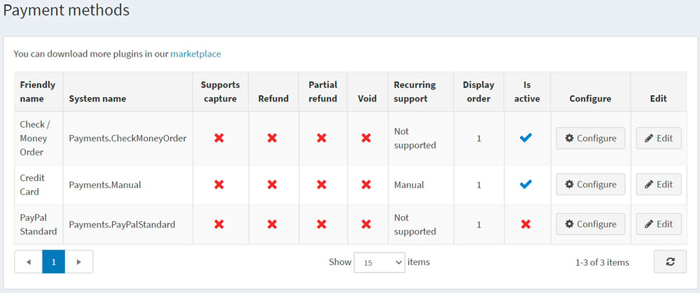

付款方式
付款方式是指顧客支付訂單款項的途徑。nopCommerce 同時支援「線上」與「離線」交易。對於線上付款方式，nopCommerce 與第三方支付閘道整合，當顧客完成訂單時，其信用卡資訊會自動透過閘道傳送（進行授權，或授權並請款）。您可以同時啟用多種付款方式，顧客在結帳時可自行選擇付款途徑。
若要定義付款方式，請前往 設定 → 付款方式。
Tip
nopCommerce 預設提供了幾種付款方式，您也可以在 nopCommerce 市集 中找到更多付款外掛。
關於付款方式的開發細節，請參閱 說明文件。

若要啟用付款方式，請點擊目標方式旁的 編輯，勾選 啟用 (Is active) 核取方塊，然後點擊 更新。啟用 選項將從 false 變更為 true。
不同的付款方式支援不同的選項。付款方式可能會支援以下 4 種付款功能（視具體方式而定）：
- 支援請款 (Supports capture)：表示該方式是否允許在款項扣除後，處理資金轉帳作業。
- 退款 (Refund)：表示該方式是否允許在款項扣除並完成請款後，進行全額退款。
- 部分退款 (Partial refund)：表示該方式是否允許在款項扣除並完成請款後，進行部分退款。
- 撤銷 (Void)：表示該方式是否允許在款項扣除前（即付款狀態為待處理時）進行撤銷退款。
- 支援週期性付款 (Recurring support)：表示該方式是否允許週期性付款。
點擊付款方式旁的 設定 即可進行相關調整。